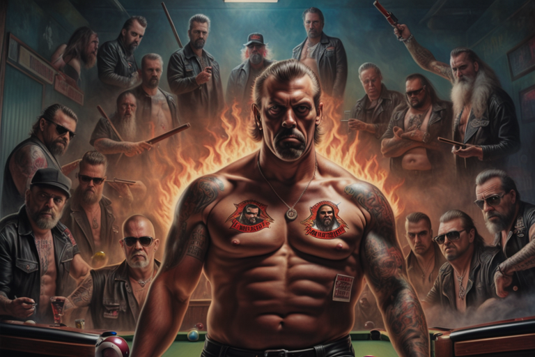

Terminator and the pool game
HOME
Table of Contents
Terminator takes a timeout

The door creaked open, and in walked a figure that seemed straight out of a sci-fi nightmare. He sauntered in with all the grace of a robot on a catwalk, water dripping from his metallic endoskeleton. Terminator, that time-traveling menace, had chosen this quaint bar to make his grand entrance. The regulars, still nursing their drinks, exchanged perplexed glances, their eyes widening as they took in the sight of the rain-soaked cyborg.
The bartender, wiping down a glass with a rag that had seen better days, looked Terminator up and down. “What’ll it be, stranger?” he asked, his voice a mix of indifference and the kind of skepticism you reserve for people who claim they’ve seen Bigfoot at a local mall.
Terminator’s crimson eyes scanned the bar, the flickering neon signs reflecting off his metallic exterior. “I’ll have a glass of motor oil, shaken, not stirred,” he deadpanned, his monotone voice cutting through the somber hum of the jukebox. The regulars exchanged bewildered glances, wondering if they’d accidentally stumbled into a sci-fi comedy night.
The bartender arched an eyebrow, unfazed by the unusual request. “Sorry, pal. We’re fresh out of motor oil. How ‘bout a beer instead?”
Terminator considered this, his metallic jaw moving as if he were mulling over the complexities of quantum physics. “Fine. A beer. And make it a cold one. I’ve just come from the future, and trust me, they don’t have refrigerators there.”
The regulars, now collectively convinced they were part of a cosmic prank, watched as Terminator settled onto a barstool, water pooling beneath him. The bartender slid a frosted mug across the counter, and Terminator grabbed it with a grip that could crush a smartphone into oblivion.
As Terminator took a sip, the jukebox seemed to sense the surrealness of the moment and switched to an upbeat ’80s pop anthem. The Terminator, unfazed by the sudden change in musical tone, looked around the bar with an air of detached curiosity. “I’ve heard your world has the best ‘80s hits. Judgment Day was really missing out.”
One of the regulars, emboldened by a few too many sips of his drink, mustered the courage to ask, “So, uh, what brings you here, Terminator?”
Terminator turned to him, his expression as deadpan as ever. “Just thought I’d take a break from saving or destroying the world, depending on the timeline. Also, your Yelp reviews for this bar were surprisingly good.”
Steel and skill
The Terminator, watched around into the dimly lit pool hall, his eyes scanning the room for a game of pool. He had been on the run for days, his systems failing and in need of repair. But he couldn’t shake the feeling that he needed to win, to prove himself, to feel alive.
And then he saw them: a group of Hells Angels, their leather vests adorned with patches and their faces hardened by years of crime and violence. They were huddled around the pool table, chalking their cues and laughing raucously.
The leader of the motorcycle gang, a burly figure with a beard that looked like it had tangled with a hurricane and lost, looked up from his shot and eyed Terminator suspiciously.
“Well, well, well, look what we got here, a naked robot. Hey, metal man, you lost?” the biker chuckled, his comrades joining in with raucous laughter that echoed through the bar.
Terminator remained unfazed, his expression unchanging. “I wish to engage in this game you humans call ‘pool.’ Hand me that stick,” he said, pointing to a pool cue leaning against the wall.
The biker raised an eyebrow, sizing up the unexpected challenger. “You sure you wanna play, Tin Man? It’s a rough game. Not for the faint of heart.”
The gang leader gestured toward the pool table, a challenge in his eyes. “Alright. Let’s see what you’ve got. Winner stays on.” Terminator grabbed a pool cue with the ease of someone who had dismantled a T-1000 with the same instrument. As he approached the table the regulars, now huddled in a circle, watched in a mix of anticipation and disbelief.
Terminator leaned over the table, calculating angles and trajectories with the precision of a supercomputer playing billiards. The Hells Angels exchanged skeptical glances but to their surprise, the metallic maestro struck cue ball with precision and three balls ended up stacked on top of one another. The gang leader, now sporting a mix of admiration and grudging respect, slapped Terminator on the back.
“Not bad, metal man. You’ve got more game than half the punks in this joint. What’s your secret?” Terminator, his eyes flickering with a hint of digital mischief, replied, “I’ve been in the future, and let me tell you, there’s a lot of downtime. Pool skills are essential for survival.”
Pool hall payoff

Terminator, having triumphed in the pool game, stood tall amid the dimly lit pool hall, a metallic glint in his eye that betrayed neither joy nor satisfaction. The Hells Angels, begrudgingly impressed, gathered around the table, scratching their heads in disbelief. The gang leader with a beard that could host a family of small mammals, reluctantly slapped a wad of crumpled bills into Terminator’s hand.
“Well, I’ll be damned. You’re not just a metal freak; you’ve got some hustle in you,” the gang leader grumbled, the stomp of his boots echoing in the smoky air. “So, what’s your deal, Tin Man? Where do you get off being so damn good at pool?”
Terminator, still devoid of any emotional inflection, simply replied, “Efficiency is key for survival. Pool is an efficient game.”
The gang leader chuckled, his cigar dangling from the corner of his mouth like a dare. “Efficiency, huh? You’re like the Steve Jobs of pool, but with less turtlenecks.”
As the gang gathered to pay their bets, a minor hiccup emerged. Terminator, being the fashion-forward android that he was, lacked the traditional human amenities, like pockets. The gang leader, eyeing Terminator’s naked frame with a mix of suspicion and amusement, raised an eyebrow.
“Hey, Tin Man, where do you want this cash? You ain’t got no pockets, and I’m not gonna fund your next wardrobe malfunction.”
Terminator, unfazed by the lack of anatomical nuances, pointed to the antenna protruding from his metallic skull. “Connect to my CBDC account. It’s the currency of the future,” he deadpanned.
The gang leader, always up for a good wager and unfamiliar with the intricacies of futuristic finance, smirked and pulled out a cigar, lighting it with a nonchalant flick of his Zippo. “Well, I’ll be damned. A fan of CBDCs in our midst? Fancy pants over here is all about that digital dough.”
He took a puff from his cigar and, with a devilish grin, stubbed it out on Terminator’s plastic skin. The gang leader, pleased with his impromptu demonstration of dominance, chuckled as Terminator remained stoically indifferent to the sizzling end of his synthetic skin.
“You win, metal man, fair and square. But remember, you might be a pool shark, but you’re still in our world. We make the rules,” the gang leader declared, the haze of cigar smoke enveloping the bar like a cloak of defiance.
Terminator, seemingly unbothered by the singed plastic, nodded in acknowledgment. “Understood.”
Data decapitation

In the shadows of a far away office, a discreet figure observed the unfolding scene through a high-tech surveillance feed. The secret service agent, clad in a tailored suit that screamed authority, sat in front of a wall of screens displaying a myriad of data streams. His eyes, shielded by a pair of sleek glasses, bore into the live feed from Terminator’s visual cortex.
As the gang leader extinguished his cigar on Terminator’s synthetic skin, the secret service agent clenched his jaw, a testament to the frustration simmering beneath his composed exterior. The Hells Angels, in their insolence, had unwittingly become pawns in a much larger game.
The agent toggled a few buttons on his sleek control panel, activating a secure communication line. “Director, this is Agent Reynolds. We’ve got a situation. The Hells Angels are playing with fire, quite literally.”
The stern voice of the director crackled through the line. “Go on, Reynolds. What are we dealing with?”
Reynolds adjusted his tie, his gaze never leaving the screen. “Terminator, our asset, is in the midst of an encounter with the Hells Angels. It seems they’ve taken a liking to tormenting him with fire and cigars. Standard intimidation tactics, but it’s escalating.”
The director’s response was swift and decisive. “Terminate their financial resources. We can’t have these bikers disrupting our operations.”
Reynolds nodded, his fingers dancing across the keyboard as he initiated the financial decapitation. “Cutting credit lines now. We’ll squeeze them until they beg for mercy.”
On one of the screens, a complex web of financial connections unraveled. The credit lines that fueled the Hells Angels’ operations were severed with surgical precision. The secret service’s digital claws dug deep into the financial infrastructure that sustained the biker gang’s activities.
As the gang leader continued to gloat over Terminator’s stoic form, Reynolds watched with a detached satisfaction. The Hells Angels, unaware of the invisible hands manipulating their fate, were about to feel the pinch of financial asphyxiation.
The director’s voice cut through the tension. “Reynolds, ensure that Terminator remains unscathed. We can’t afford to lose our asset, especially in such a public setting.”
“Understood, Director. Terminator will emerge from this unscathed, and the Hells Angels will find their resources evaporating,” Reynolds affirmed, his eyes fixed on the screen as the gang leader issued a final, boastful declaration.
As the Hells Angels carried on with their antics, unaware of the financial storm brewing in the digital realm, Reynolds leaned back in his chair, a small but victorious smirk playing on his lips. The bar, a microcosm of chaos, would soon witness the silent retaliation of unseen forces. The secret service, in its calculated pursuit of control, had played its move, and the pieces on the chessboard were starting to realign.
Analog realignment

In the dimly lit bar, Terminator’s stoic gaze remained fixed on the Hells Angels as they reveled in their ill-conceived victory. Meanwhile, in the labyrinthine corridors of digital power, Agent Reynolds executed the next phase of the operation.
He leaned back, a wry smile playing on his lips as he spoke into the secure line. “Director, the Hells Angels are officially off the digital grid. No more sweet credit lines, no more financial escapades. They’re back to the basics now.”
The director’s response was swift and laced with bureaucratic indifference. “Good. Keep me posted, Reynolds.”
As the digital curtains closed on the Hells Angels’ financial playground, Reynolds allowed himself a moment of satisfaction. But he wasn’t done yet. He leaned back in his chair, the neon glow of the screens reflecting off his aviator sunglasses. “Now, here’s the kicker, fellas. We’re cutting off their digital IDs. No more fancy wallets, no more crypto dreams. They’re back to the Stone Age. Cash, tattoos, and maybe a carrier pigeon if they’re lucky.”
Reynolds grinned “These guys are gonna be as lost as a cat in a Chinese restaurant. And speaking of China, let’s take it up a notch.”
With a devilish cackle, Reynolds initiated the next phase of his plan. He accessed the public records of the Hells Angels, their inked bodies serving as a canvas for their twisted allegiances. “CCP style, my friends. From now on, their tattoos are their passports, their IDs, and their VIP tickets to the shitshow.”
Back in the bar, the gang leader, oblivious to the digital guillotine descending upon him, clinked his beer bottle against Terminator’s metallic frame. “You’re alright for a tin can,” he said with a grin.
Terminator, unfazed by the compliment, glanced at the gang leader with a hint of digital amusement. “Efficiency is key,” he responded, as if the severed digital ties were just a minor inconvenience.
As the gang members fumbled with their smartphones, realizing the extent of the digital blackout, Reynolds couldn’t help but savor the irony. The Hells Angels, who once flaunted their digital prowess, were reduced to relying on the permanence of their tattoos.
In the director’s steely voice, Reynolds heard the satisfaction of a plan meticulously executed. “Let them navigate the analog world with their inked signatures. The digital leash is cut, but the real world has its own set of constraints.”
The gang leader, now grappling with his useless smartphone, shot a bewildered look at Terminator. “What the hell’s going on with these damn phones?”
Terminator, ever the enigmatic presence, simply replied, “The future is unpredictable.”
Reynolds, observing the chaos unfold, leaned back in his chair, his fingers steepled in contemplation. The Hells Angels, once kings of the digital realm, were thrust into a new reality where inked tattoos replaced the ones and zeros of their former existence.
As the bar pulsated with the frenetic energy of a disconnected gang, Reynolds couldn’t help but marvel at the intricacies of the power play. The digital puppet master had cut the strings, and now the Hells Angels danced to the unpredictable rhythm of a world no longer bound by lines of code.